一、投資結論
有條件參與（策略性選購）——不是無條件買入，也不是一律放棄。
信念：中偏低。星期六確為官方「出售首日」，但中籤後能否選到有真實海灣／海港方向景觀、樓層足夠、並以90天付款取得約18%折扣的兩房，才決定這筆交易是否划算。
價格條件：兩房若能以價單第1號「90天現金優惠付款計劃」加早鳥等適用折扣折實（約18%），呎價大約處於13,800至15,500元（第2座A室偏貴，見下文），相對一期兩房成交中位呎價約14,903元，屬於可比較、略為進取但不至於明顯高估的首輪定價。若只能使用建築期付款（折實僅約10%，較90天計劃貴約9.8%）、或只能選到低層／景觀明顯受阻的單位，本輪建議放棄，等待成交紀錄冊及後期價單。
為何不是「一律買入」
- 18%折扣必須在簽署臨時買賣合約後90天內付清樓價；官方預計關鍵日期為2028年12月30日，兩年持有期與樓花期幾乎重疊，期間沒有租金。
- 傳媒報道首輪128伙錄得約17,000張支票、超額約131倍。即使到場，選到理想座向與樓層的機會不高。成交紀錄冊仍顯示「敬請期待」，此超額倍數並非官方數字。
- 售樓說明書「有關資料」列明後續期數施工可能影響景觀、噪音及塵埃；布局圖顯示尚有第3期；市面上亦有油塘灣綜合發展區等規劃討論。海景並非所有兩房、亦非永久不變。
- 地契由2024年1月24日起計50年，至2026年11月剩餘約47年。須向擬承按銀行確認按揭年期及估價。
- 本期售樓說明書停車位平面圖註明「不適用」，即第2期不設住宅車位。
為何不是「一律放棄」
- 以官方價單計算，90天付款加早鳥等折扣後，兩房中位折實呎價約14,662元，低於本報告自一期《成交紀錄冊》（2026年11月17日文本）解析所得兩房成交中位呎價約14,903元（209宗有面積紀錄）。第1座K室（503呎）中位折實約14,424元，相對一期並不昂貴。
- 128伙面積加權折實呎價約14,611元，與公開報道一致（由價單自行重算）。
- 需求側措施（額外印花稅SSD、買家印花稅BSD）已於2024年2月28日起取消；現時只繳從價印花稅。中位兩房（約711萬）稅率為3%；入場兩房（595.01萬）為2.25%。
- 項目臨近油塘站及維港東岸，屬東九龍改善交通題材；惟步行時間、坡度須實地核實（賣方稱約6分鐘，屬宣傳資料）。
必須先行聲明：下文的XGBoost 24個月因子模型，在2019–2021驗證期及2022–2024測試期的樣本外R²顯著為負，點預測（約+19%至+21%）不能作為決策基準。本備忘錄的回報區間以歷史24個月回報分布、2025–2026年反彈已經走了一截、以及近月指數回軟，作為判斷情景，並清楚標示不確定性。
二、項目身分與星期六銷售安排
經核對賣方指定網站及售樓說明書，本報告所評估的是擎海（The Atlas）的第2期，市場多稱「擎海II」，而非一期或其他油塘項目。
| 項目 | 內容 |
|---|---|
| 發展項目期數名稱 | 擎海（發展項目）的第2期（「期數」） |
| 地址 | 東源街23號（臨時門牌，有待期數落成時確認） |
| 地區（廣告法定格式） | 茶果嶺、油塘、鯉魚門 |
| 賣方 | 俊英發展有限公司 |
| 賣方的控權公司 | 越秀地產（香港）有限公司、越龍控股有限公司、越秀地產股份有限公司 |
| 認可人士／建築師 | 陳韻明；巴馬丹拿建築師有限公司 |
| 承建商 | 其士建築（香港）有限公司 |
| 代表律師 | 的近律師行 |
| 建造融資認可機構 | 浙商銀行股份有限公司（透過其香港分行行事） |
| 公契管理人 | 越秀物業管理有限公司（與賣方同屬越秀地產股份有限公司附屬公司） |
| 期數規模 | 未落成期數；2幢多單位建築物（第1座、第2座）；共617伙；各27層住宅層（2、3、5–12、15–23、25–32樓；不設4、13、14、24樓） |
| 預計關鍵日期 | 2028年12月30日（認可人士提供；可按買賣合約准許而延期）。布局圖另載各期建築物及設施預計完工日期為2028年5月8日，與關鍵日期定義不同，兩者不要混為一談。 |
| 地契 | 油塘內地段第46號餘段；交換條件第20430號，日期2024年1月24日；年期50年，由2024年1月24日起計 |
| 指定網站 | https://www.theatlas.hk/phase2 |
| 展銷廳 | 九龍灣宏照道33號國際交易中心29樓；查詢熱線3757 6888 |
2026年11月28日（星期六）是什麼日子？
是，已獲官方確認。銷售安排第1號（發出日期2026年11月23日）訂明：
- A批次：由2026年11月28日起出售；當日為「出售首日」，上午9時至晚上11時；地點為國際交易中心29樓及31樓部份。其後每日上午11時至晚上8時，地點為29樓。A批次提供128個指明住宅物業（價單所列之一房及兩房）。
- B批次：2026年11月29日至12月31日每日招標，下午2時至5時，共10個第1座三房單位（6B、10B、16B、17B、22B及相應M室）。不屬本備忘錄的兩房範圍。
售樓說明書須於開售前至少7日、價單及銷售安排至少3日前向公眾提供。本項目已符合此時序。官方網站顯示成交紀錄冊、抽籤結果及車位價單為「敬請期待」。
來源：銷售安排第1號 PDF；官方銷售資料頁，2026年11月27日擷取。
三、海景兩房：面積、價單、付款與印花稅
價單第1號於2026年11月19日印製，列出128伙（佔本期617伙約20.7%），全部納入A批次。本報告以PDF全文解析，核對為81伙一房、47伙兩房，與賣方及傳媒報道一致。實用面積285至503平方呎。價單所列為標價；成交金額按付款辦法及折扣計算後，進位至最接近的百元。
兩房戶型（僅此四款在首輪價單）
| 座向／室 | 實用面積 | 廚房 | 差估署面積類別 | 伙數（樓層） | 折實總價（港元） | 折實呎價 | 折實總價（美元） |
|---|---|---|---|---|---|---|---|
| 第1座K室 | 46.704平方米（503呎） | 開放式廚房 | B類（40–69.9平方米） | 16伙（3至32樓不等） | 696.01萬–766.01萬 | 13,837–15,229（中位約14,424） | 約89.2萬–98.2萬 |
| 第2座A室 | 42.862平方米（461呎） | 開放式廚房 | B類 | 10伙（8至28樓） | 706.01萬–746.01萬 | 15,315–16,182（中位約15,684） | 約90.5萬–95.6萬 |
| 第2座C室 | 39.849平方米（429呎） | 開放式廚房 | A類（少於40平方米） | 11伙（5至31樓） | 595.01萬–646.01萬 | 13,870–15,059（中位約14,522） | 約76.3萬–82.8萬 |
| 第2座D室 | 45.003平方米（484呎） | 梗廚 | B類 | 10伙（8至28樓） | 688.01萬–724.01萬 | 14,215–14,959（中位約14,566） | 約88.2萬–92.8萬 |
首輪兩房最低總價為第2座5樓C室：標價725.61萬，折實595.01萬（約13,870元／呎）。最高折實呎價為第2座28樓A室：746.01萬（16,182元／呎）。全張價單128伙折實範圍為395.01萬至766.01萬、呎價約13,499至16,182元，面積加權平均呎價約14,611元。
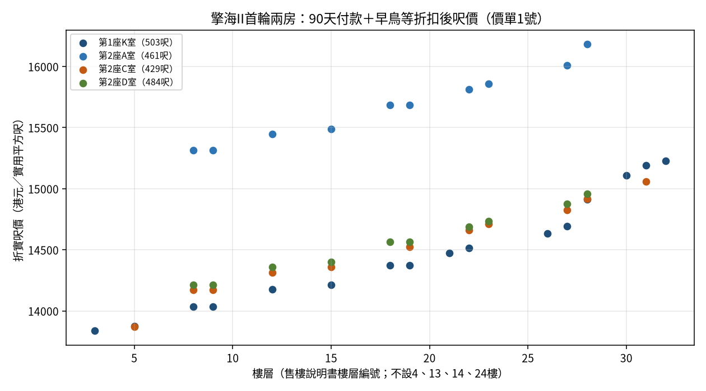
付款計劃（只可擇一，再疊加上述折扣）
| 計劃 | 計劃本身折扣 | 加早鳥及四項命名折扣後 | 餘款期 |
|---|---|---|---|
| （A）90天現金優惠付款計劃 | 減10% | 約18% | 簽署臨時合約後90天內付清90%餘款（或賣方發出可有效轉讓書面通知後14天，以較早者為準） |
| （B）180天現金 | 減8% | 約16% | 180天 |
| （C）300天現金 | 減6% | 約14% | 300天 |
| （D）建築期付款計劃 | 減2% | 約10% | 賣方發出可有效轉讓書面通知後14天 |
臨時訂金為成交金額5%，其中10萬元須以銀行本票支付，抬頭「的近律師行」。若買方委託賣方律師處理買賣合約及轉讓契，賣方同意承擔該兩項律師費；印花稅一律由買方支付。舉例：入場兩房若改用建築期計劃，折實約653.05萬，較90天計劃的595.01萬高出約58萬（約9.8%）。
哪些兩房才算「海景」？
賣方宣傳及新聞報道稱，部分單位可望香港島及九龍兩岸。售樓說明書沒有逐戶保證海景。本報告根據官方布局圖、典型樓面平面圖（附北方指針）及地政總署2025年9月12日鳥瞰照片，作以下推斷（不是賣方陳述）：
- 地盤西面為油塘灣水域，南面為三家村避風塘，東面為內陸／道路，北面沿岸為同一發展項目的第1期。
- 朝西或西南、樓層較高的廳房，較有機會看到油塘灣及更遠處的維港方向水面；朝東的外牆在平面圖上多見隔音趟窗，較像面向噪音來源而非開揚海面。
- 第2座5樓C室是總價最低的兩房，樓層低，海景或開揚度很可能較弱，呎價折扣是補償而非「平貨必定優質」。
- 第2座A室呎價最高，或反映發展商對該疊的座向／景觀定價較進取，買家仍須在示範單位及現場核對實際視線，並評估第3期及灣內未來發展。
準買家應在揀樓前要求銷售人員以售樓說明書平面圖指出該戶窗向，並到東源街實地觀察。畫家想像圖及經過修飾的航拍不能代表竣工後的視野。
四、位置、環境與景觀風險
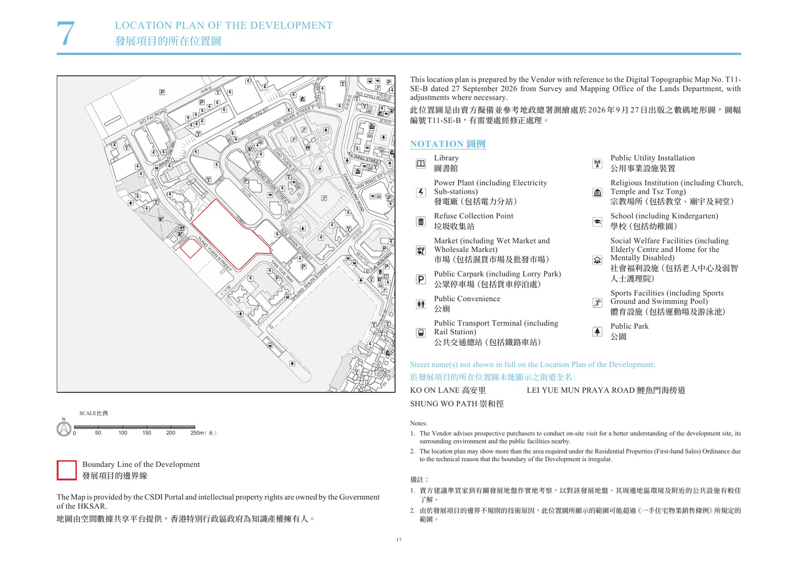
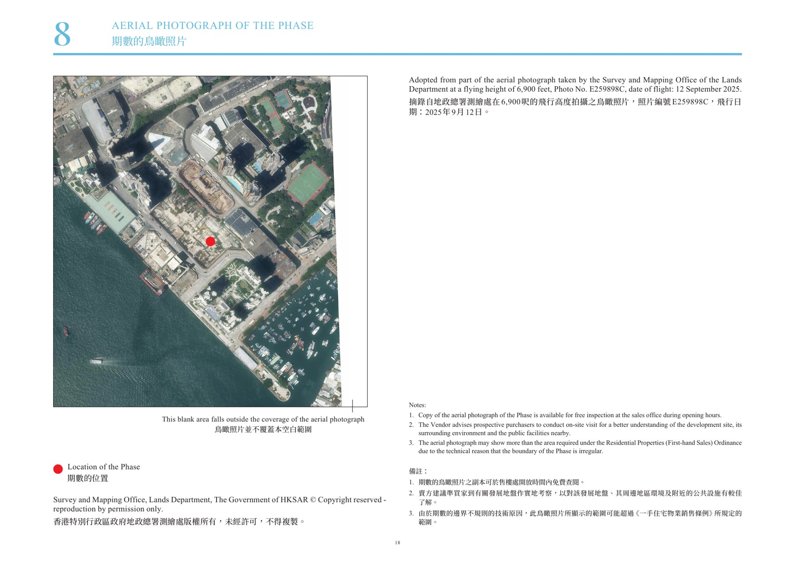
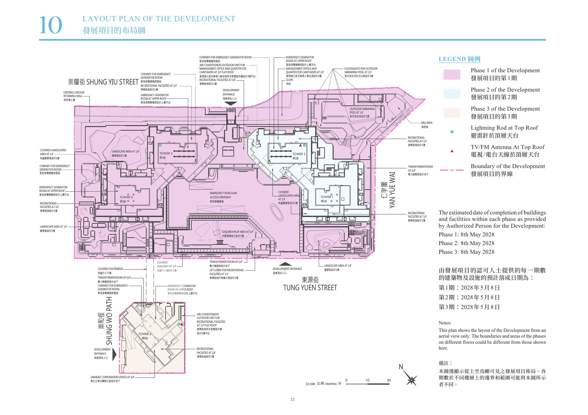
交通與城市功能
- 賣方稱步行約6分鐘至港鐵油塘站，並稱可於一站內接駁多條路線；擬議東九龍智慧綠色集體運輸系統宣傳完成年份為2033。以上均屬賣方廣告，須實地核對路程、坡度及環境。
- 賣方稱中九龍繞道（九龍灣段）目標於2026年12月6日通車。此為基礎設施利好，但是否大幅縮短由油塘出發的車程，仍取決於實際開通及路面狀況。
- 附近有鯉魚門、三家村避風塘、海濱長廊及域多利道／鯉魚門一帶社區設施；同時亦是工業用途逐步過渡中的水岸，景觀及氣味、噪音並非純住宅區。
噪音、施工與視野走廊
售樓說明書「有關資料」列出隔音窗（擋音式）及隔音露台（擋音式），顯示部分單位須緩解噪音。說明書亦提醒：後續期數施工可能對景觀、噪音、沙塵及周邊環境造成實質影響；第1期低層會所、泳池、烤肉場的燈光及活動、排氣設備及冷氣室外機，亦可能影響個別單位。第2期不設住宅車位（停車位平面圖註明「不適用」）。
賣方網站提到擬議「油塘灣綜合發展區」日後或會沿岸興建住宅、商業及酒店，這正是西面海景的主要長遠變數。本報告已查閱2026年有關《茶果嶺、油塘、鯉魚門分區計劃大綱圖》的政府公報，但沒有在此次工作中取得可逐幅引用的、已批核的油塘灣填海／高廈最終方案；買家不應假設現有海面視野會永久保留。若個別傳媒提及東源街18號等鄰近用地的高度限制，亦應以規劃署／城規會文件為準，本報告未將未經核對的樓層數當作事實。
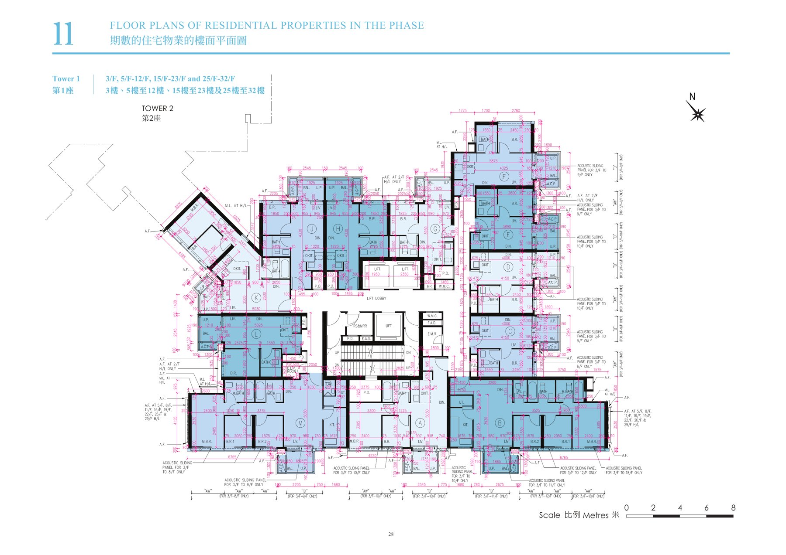

五、一期成交及市場比較
最佳可比物業是同一發展項目的第1期。本報告下載並解析官方《成交紀錄冊》（文件標示2026年11月17日），共解析587筆資料，其中548筆能配對價單面積從而計算成交呎價。戶型按面積及平面邏輯歸類，一期室號與二期並不完全相同，分類或有少量誤差。
| 口徑 | 宗數 | 中位呎價（港元） | 範圍或其他 |
|---|---|---|---|
| 一期全部（有面積） | 548 | 14,684 | 四分位 14,125–15,369；中位成交價約493萬 |
| 一期一房 | 339 | 14,597 | 13,008–17,749 |
| 一期兩房 | 209 | 14,903 | 13,038–17,346；四分位 14,173–15,530；中位成交價約724萬 |
| 二期首輪兩房（18%折實） | 47 | 14,662 | 13,837–16,182；中位總價711.01萬 |
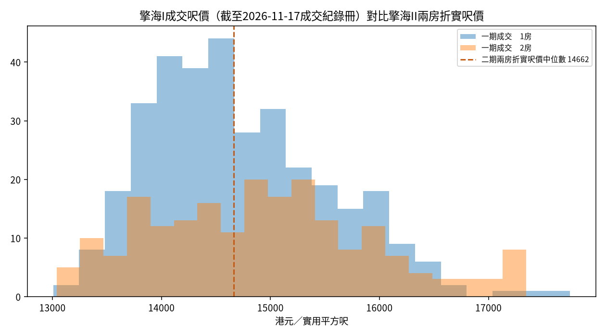
解讀：在「能用足18%折扣」的前提下，二期兩房整體定價貼近一期已實現成交，第1座K室及第2座C／D室甚至略低於一期兩房中位；第2座A室（中位約15,684元）則高於一期兩房上四分位（15,530元），需要明顯較佳景觀才能說得通。傳媒引述賣方指，若撇除景觀因素，定價較一期「僅高約1%」，與本報告按不同口徑計算的「首批加權呎價高約4.45%」（外間分析，以一期首張價單而非後期成交作比較）並非同一基礎，不宜混用。真正要緊的是與已經成交的一期價格比較。
本報告沒有在此時段建立完整的油塘二手海景兩房（例如旁的較舊私人屋苑）逐宗資料庫。若星期六未能中籤，一期未售或即將二手轉讓的單位，會是最直接的替代。
六、印花稅、按揭與地契年期
額外印花稅（SSD）及買家印花稅（BSD）不適用於2024年2月28日或之後簽立的住宅文書。此為現行制度，不是2024年以前的雙倍印花稅或15%新住宅印花稅環境。來源：稅務局「住宅物業需求管理措施」常見問題；《2024年印花稅（修訂）條例》。
從價印花稅（AVD）：由2026年2月26日起，住宅物業適用第1標準第1部及第2標準（兩者稅率相同）。與本項目兩房相關的主要稅階為：
- 4,935,481至600萬元：2.25%（入場兩房595.01萬，稅款約133,878元，佔2.25%）
- 6,642,861至900萬元：3.00%（中位兩房711.01萬及高價766.01萬，分別約213,303元及229,803元，均為3%）
來源：稅務局AVD常見問題及GovHK印花稅率頁，2026年11月27日查閱。
按揭成數：金管局2024年10月16日公布的逆周期措施，將適用於銀行按揭的住宅樓宇貸款與價值比率上限調整為70%、供款與入息比率上限50%（不區分自住或公司持有等舊有分層）。本報告並未發現其後有更新的、推翻該框架的官方公告；準買家仍應向擬承按銀行確認2026年11月的實際政策、壓力測試及樓花按揭是否可做。合資格的初次置業人士或可經香港按證保險公司按揭保險計劃申請較高成數，須符合當時的樓價及入息上限，本報告不假設讀者合資格。
地契年期風險：50年期由2024年1月24日起計，理論屆滿約2074年1月。星期六購買時剩餘約47年；若2028年底才入伙，剩餘約45年。不少銀行要求地契剩餘年期長於還款期一定年數。這不會令物業「沒有業權」，但可能影響最長按揭年期、估價及日後轉售時的買家融資，必須在落訂前向銀行問清楚。
現時最優惠貸款利率：金管局表6.4.1顯示滙豐所報最優惠利率自2025年10月31日起為5厘；表6.4.2的2026年10月期內平均亦為5厘。香港銀行公會銀行同業拆息（經東亞銀行網頁轉載，生效日期2026年11月26日，於2026年11月27日10:45查閱）：1個月2.93506厘、3個月3.43625厘、6個月3.57679厘。樓花期若以H+或P–計算，實際利息成本仍取決於銀行報價及是否批出樓花按揭——90天計劃本質上要求短期內繳足樓價，對資金調動要求很高。
七、全港住宅市場
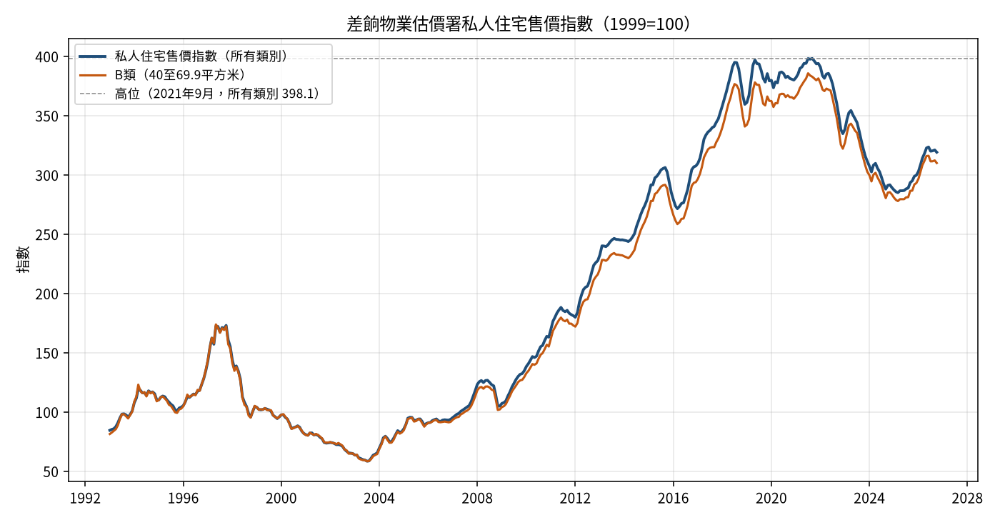
- 2026年10月，所有類別指數319.0，按年升約8.2%；B類（40–69.9平方米）309.9，按年升約8.1%。
- 此輪低位在2025年3月（所有類別284.9），其後反彈至2026年6月的323.4，再回軟至10月的319.0。相對2021年9月高位398.1，仍低約19.9%；相對2025年3月低位則已升約12.0%。
- 截至2026年10月的過去24個月，指數累升約9.6%（由2024年10月計起）。
- 租金指數（差估署，2026年10月）：所有類別213.2，B類212.3。樓花單位在入伙前不能提供這部分回報。
- 差估署買賣統計最新完整月份為2026年9月：一手1,502宗、二手3,259宗。土地註冊處經新聞公報：2026年10月住宅買賣合約4,512份，按月跌5.2%，按年跌21%；代價423億元，按月跌9.5%，按年跌17.1%。（來源：news.gov.hk，2026年11月3日）
機構觀點（只引用已成功下載或可核對的來源，不臆造數字）：仲量聯行有2026年新聞稿討論以競爭性定價支持需求、並提醒利率變數；第一太平戴維斯及戴德梁行有2026年第一季研究報告涵蓋香港投資及住宅市場。部分2026年後期報告（例如仲量聯行或世邦魏理仕網站文章）在此次抓取中未能完整保存正文，故不在此複述未經核對的預測百分比。外間有代理行對2026年全年樓價作出偏樂觀預測，但以10月指數計，年內升幅已部分兌現，且近月回軟，不宜把「全年預測」直接延長為未來兩年的保證。
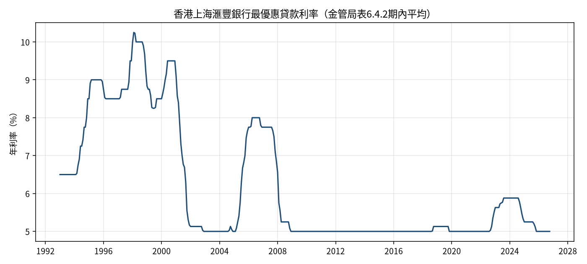
八、兩年預期回報與因子模型
投資地平線的結構性特點
若星期六買入，兩年後約為2028年11月，與預計關鍵日期2028年12月30日幾乎重疊。因此，這主要是樓花期的資本值變化，而不是「資本增值加淨租金」的典型已落成物業兩年回報。管理費、差餉及地租主要在入伙後才開始；在此之前，買家承擔的是已繳樓款的資金成本、印花稅，以及延誤或未能完工的風險。
XGBoost模型：做了什麼，以及為什麼不能直接用點預測
本報告以Python及XGBoost，用差估署月度售價指數、租金指數、買賣宗數、金管局最優惠利率、外匯基金票據收益率、港元隔夜平均指數（HONIA，2016年起）及政策虛擬變數，預測其後24個月指數升跌。訓練樣本為2003年12月至2018年12月的特徵月份（181個）；驗證期2019–2021（36個）；測試期2022年1月至2024年10月（34個，對應標籤直至2026年10月）。B類指數另訓練一個平行模型。完整方法見附錄模型卡。
| 樣本 | n | RMSE | MAE | R² |
|---|---|---|---|---|
| 訓練（所有類別） | 181 | 0.012 | 0.009 | 0.99 |
| 驗證 | 36 | 0.31 | 0.27 | −13.9 |
| 測試 | 34 | 0.40 | 0.39 | −12.1 |
| 測試（B類） | 34 | 0.38 | 0.37 | −11.6 |
訓練期幾乎完美擬合，但樣本外全面失效，顯示模型過度貼合2010年代的政策及升市節奏，未能捕捉2022–2026年的息口衝擊、需求管理措施取消及隨後的急跌急彈。模型在最新特徵月份（數據完整至2026年9月）給出的點預測約為：所有類別+20.5%、B類+18.7%；若機械地加減測試期殘差標準差（約8.6個百分點），區間仍全數為正。鑒於R²為負，本備忘錄不採納該點預測作為「預期回報」。
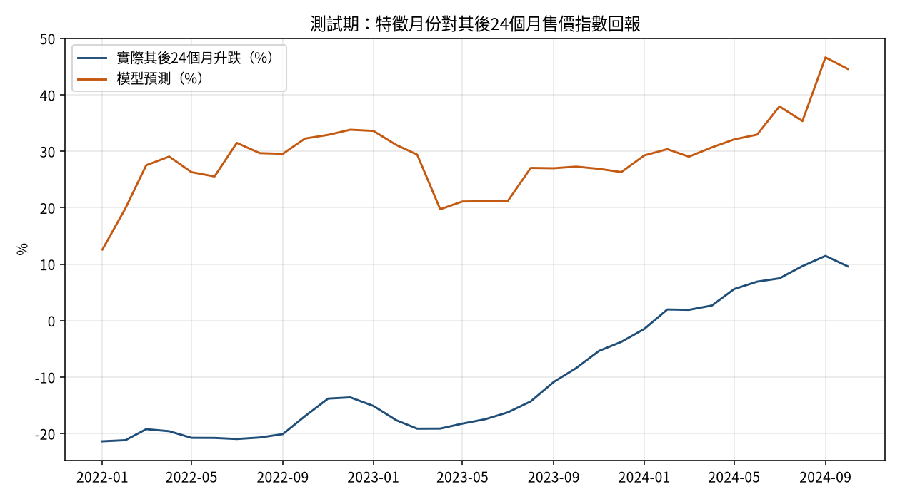
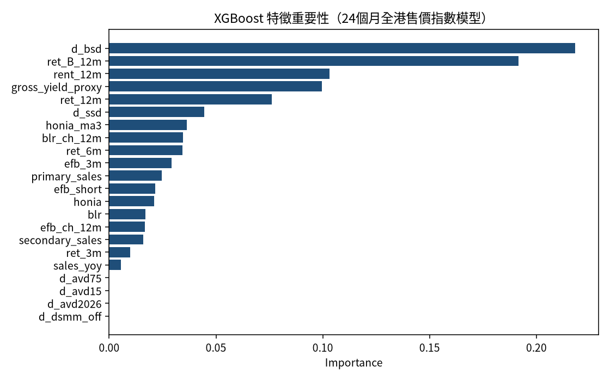
較誠實的判斷情景（請與模型分開閱讀）
歷史上，差估署所有類別指數的24個月回報中位數約+11.0%（1979年代以來可用樣本）、2000年以後中位數約+12.1%；但2015年以後的特徵月份（標籤覆蓋至2026年）中位數僅約+2.0%。換言之，近十年的兩年期資本回報遠弱於更長樣本的中位數。
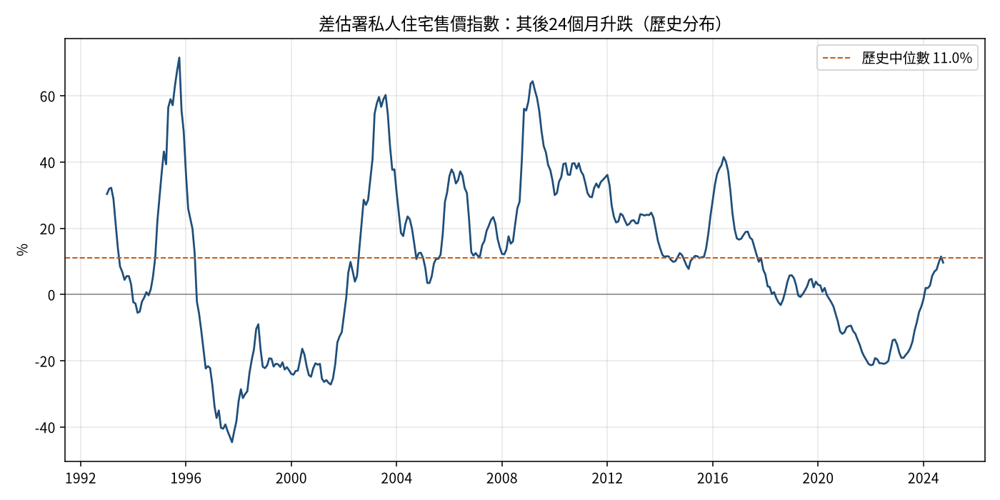
| 情景 | 兩年資本回報（判斷） | 扣印花稅、近乎零租金後 | 說明 |
|---|---|---|---|
| 熊市 | 約−10%至−5% | 約−13%至−8% | 成交量繼續按年收縮、息口意外回升，或新供應集中推出 |
| 審慎基準 | 約0%至+8%（中間值約+5%） | 約−3%至+5%（中間值約+2%） | 指數已自低位反彈12%且近月回軟；仍低於2021年高位約20%，但兩年內「再走一截升幅」並非必然 |
| 樂觀 | 約+10%至+15% | 約+7%至+12% | 息口進一步回落、成交回穩，市場重新追逐2021年高位——這是可能性，不是基本假設 |
若買家以90天計劃鎖定資金約兩年，並以現時1個月銀行同業拆息約2.94厘作為極粗略的機會成本，基準情景的經濟利潤還要再削一截。建築期計劃雖然減輕前期資金壓力，但樓價高出約一成，在基準及熊市情景下更不划算，只適合無法在90天內籌措全數樓款的買家。
美元換算：兩房折實約76.3萬至98.2萬美元（7.80）。聯繫匯率下，本報告不就外匯風險或兌換差價扣減回報。
九、風險、催化劑與會改變結論的事項
主要風險
- 景觀及視野走廊：第3期、油塘灣綜合發展區及其他沿岸發展，可能削弱「海景」溢價；低層單位風險更高。
- 流動性：樓花轉售視乎市況及買賣合約限制；131倍超額若屬實，反映需求集中在首輪折扣，不保證兩年後二手同樣好賣。第2期不設車位，可能縮小部分買家群。
- 息口與政策：聯繫匯率下本港利率隨美元。現時拆息與最優惠利率已較高位回落，若再度抽升，估價及承接力會受壓。需求管理措施已撤，再推出屬尾部風險，但並非零。
- 供應：同一項目仍有第3期及第2期餘下約八成單位（617−128）。東九龍尚有其他新盤及擬議供應。
- 發展商及工程：賣方為越秀地產體系公司，承建商為其士建築，融資行為浙商銀行香港分行。關鍵日期可按合約延期。這不是指控，但樓花必然存在延誤風險。
- 抽籤機制：銷售安排將A批次分為AX、AZ及B組等（詳見銷售安排第1號全文）。即使登記，亦不保證可揀所屬意的兩房。
- 機會成本：星期六若用90天計劃，等於放棄在未來數月觀察一期價格、二期成交及息口的選擇權。
- 集中度：單一項目、單一地區、單一發展商，不宜佔投資組合過高比重。
可能的正面催化劑
- 中九龍繞道九龍灣段若如期於2026年12月6日通車，並確實改善車程。
- 息口繼續回落，樓花或入伙按揭更易負擔。
- 一期及二期後續成交穩健，令市場接受現有呎價。
- 入伙後若海景單位租金明顯高於內園或向山單位，可部分彌補樓花期的零租金（惟這已超出嚴格的兩年窗口）。
什麼會改變這項建議
- 若只能選到低層、向內或視野明顯被擋的兩房，或只能用建築期付款：改為放棄本輪。
- 若能以18%折扣選到較高樓層、經平面圖及現場判斷朝向油塘灣／維港方向的第1座K室或第2座C／D室（呎價約14,000–15,200元一帶）：維持有條件參與。
- 第2座A室只有在實地確認景觀明顯優於其他兩房、且買家接受16,000元附近呎價時才值得考慮。
- 若開售後成交紀錄冊顯示實際成交大幅低於價單折實，應停止追價，改為等候。
- 若銀行因剩餘地契年期拒絕合理年期的按揭，應重新計算，甚至退出。
十、附錄
10.1 方法摘要
本報告結合文件閱讀與量化分析：完整下載並閱讀官方售樓說明書（156頁）、價單第1號、銷售安排第1號、招標文件、鳥瞰照片、公契及賣方與公契管理人關係披露；另下載一期售樓說明書、多份價單及2026年11月17日成交紀錄冊以作比較。宏觀序列取自差估署及金管局官方試算表。單位價格由價單文本解析，折扣及進位嚴格按價單第3部規則重算，並與公開報道的上下限交叉核對。海景判斷以官方圖則及鳥瞰為基礎，不作虛構視線。模型詳見模型卡。所有關鍵數字均可在 data/atlas_ii_research.sqlite 及CSV匯出中覆核。
10.2 數據字典（節錄）
| 表 | 欄 | 定義 |
|---|---|---|
| atlas_ii_units | headline_price_hkd | 90天計劃+四項命名折扣+早鳥1%，並按價單進位至百元後的折實成交金額 |
| atlas_ii_units | sa_sf / sa_m | 價單所列實用面積（包括露台及工作平台） |
| atlas_i_transactions | transaction_price_hkd | 一期成交紀錄冊所列成交金額 |
| macro_monthly | px_ALL / px_B | 差估署私人住宅售價指數，所有類別及B類，1999=100，至2026年10月 |
| macro_monthly | blr | 金管局表6.4.2最優惠貸款利率期內平均 |
完整字典見 data/data_dictionary.csv。
10.3 模型卡（摘要）
完整英文方法說明見 models/MODEL_CARD.md。重點：這是決策輔助工具，不是對擎海II個別單位的估價或保證；未能取得完整的官方月度HIBOR歷史序列，利率因子以最優惠利率、HONIA及外匯基金票據收益率代替，並以2026年11月26日的銀行同業拆息作定性參考；樣本外表現差，點預測不採納。兩年窗口內租金接近零，必須在總回報中反映。
10.4 主要來源（擷取日期除非另註，均為2026年11月27日）
- 賣方指定網站：https://www.theatlas.hk/phase2 及其英語／銷售資料子頁；售樓說明書、價單第1號、銷售安排第1號、招標文件、鳥瞰PDF、公契及關係披露PDF。
- 一手住宅物業銷售資訊網（SRPE）入口：https://www.srpe.gov.hk。文件以賣方指定網站文本為準並已全文下載。
- 差餉物業估價署物業市場統計：物業市場統計頁；his_data_3/4/16.xls，2026年11月26日更新，數據至2026年10月（買賣統計至2026年9月）。
- 稅務局：需求管理措施FAQ；從價印花稅FAQ；GovHK印花稅率。
- 金管局：2024年10月16日逆周期措施新聞稿及FAQ PDF；表6.4.1／6.4.2、6.3.2、5.3.2試算表。
- 土地註冊處成交：news.gov.hk「October property sales fall 10%」，2026年11月3日。
- 香港銀行公會拆息，經東亞銀行網頁轉載，生效2026年11月26日。
- 一期成交紀錄冊，賣方網站，文件日期2026年11月17日。
- 傳媒（僅作補充，不取代官方文件）：《英文虎報》2026年11月19日價單報道及開售前超額認購報道；am730 2026年11月16日樓書報道。超額倍數屬傳媒數字。
- 政府公報：2026年6月12日有關《茶果嶺、油塘、鯉魚門分區計劃大綱圖》的新聞公報。
完整來源日誌見倉庫內 notes/SOURCES.md。